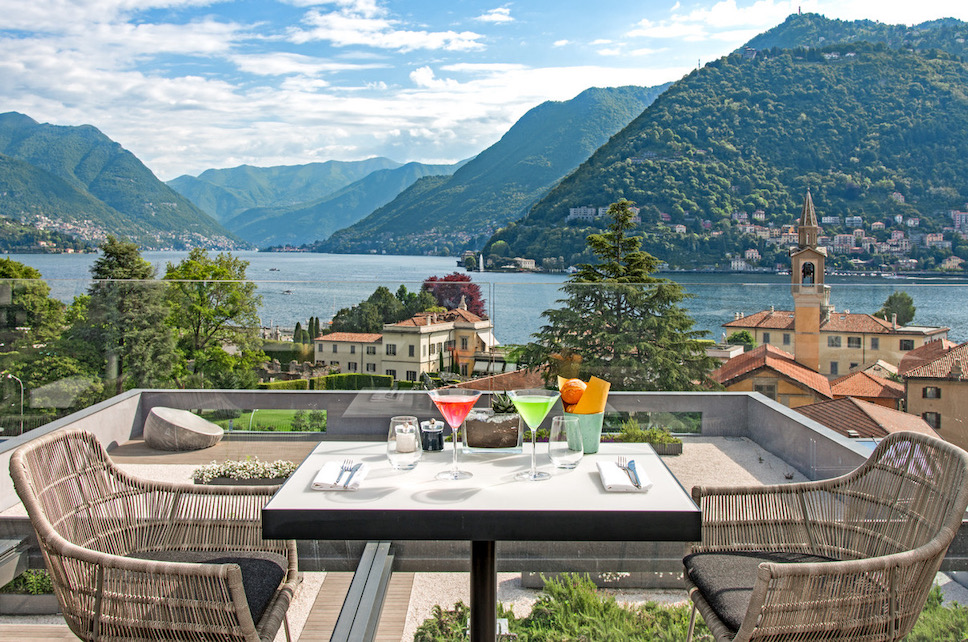

The Taste of Local: Five Aperitivo Places in Lake Como
Sit back, relax, and sip an Aperol Spritz (or two!)
For many, the best thing about the Italian way of life has to be the ‘aperitivo’ culture. With many bars offering ‘happy hour’ to attract customers, it can be very difficult to decide where to drink! From rooftop bars with 360-degree panoramic views, to small and cosy family-run establishments, you will be spoiled for choice.
Read on to find out more about top 5 places for aperitivo in Lake Como.
Terrazza 241, Hilton Lake Como
Terrazza 241 is located on the rooftop of the Hilton Lake Como, offering guests a 360-degree panoramic view of Como. Boasting an enchanting atmosphere set against the magnificent backdrop of rolling mountains and the crystal-blue shores of the iconic lake below, Terrazza 241 serves as the perfect venue for unforgettable moments, be it an informal lunch, romantic rendezvous, or important business meeting.
The rooftop bar showcases a modern glasshouse with a contemporary design and expansive windows that accentuate the breathtaking panoramic scenery, ideal for year-round enjoyment. Enriching the newly styled interior are lavish furnishings, including plush sofas, snug armchairs, and tasteful decor pieces throughout, all complemented by a backdrop of lush, flourishing plants.
Terrazza 241’s extensive cocktail list is complemented by tasty finger food – offerings from their ‘Bites’ menu.

Fine Dining Experience: Michelin Restaurants on Lake Como
Vineria Vitani, Como
Nestled in the heart of Como, Vineria Vitani is a haven for wine enthusiasts seeking an extraordinary experience. With over 11,000 bottles on display, it’s a visual spectacle and an irresistible invitation to indulge your palate.
Here, you can navigate through thousands of bottles, embarking on a passionate tour of various producers and wineries guided by knowledgeable curators who share the rich history of this magnificent collection.
Beyond a wine shop, Vineria Vitani offers wine tastings in a lavish Como setting, ensuring a top-tier experience. Gather your friends for an unforgettable evening, savouring precious wines paired with delectable snacks.
Da Luciano, Laglio
Da Luciano is a family-managed bottega located on Laglio’s waterfront, serving local and authentic Italian cuisine. The staff are charming and helpful – there is no doubt that you’ll be treated like one of the family.
In the summer, Da Luciano offered a successful new service called “Da Luciano on the Boat”, where diners could order and collect a food hamper containing a selection of dishes from Da Luciano’s menu.
At Da Luciano’s, there is a strong emphasis on celebrating the local produce of the region: in addition to serving Aperol Spritz, you can find a selection of local beers and wines from AquaDulza brewery (Tremezzo) and Cantine Angelinetta (Domaso). Highlights from the menu include the mixed board of local meats and cheeses, and the meatballs – which are described as “a real must”! Unfortunately, Da Luciano’s does not accept reservations – be sure to arrive early if you’d like a table facing the lake!
The Brothers Café, Como
The Brothers Café is a real gem that can be found in the heart of Como’s historical centre, just off of Piazza Alessandro Volta. Boasting an average of 4.5 stars from more than 300 reviews across TripAdvisor and Google, The Brothers Café serves well-prepared cocktails alongside high-quality, tasty appetizers.
The atmosphere is elegant with a modern twist. Although the interior is small and cosy, there is also some outside seating. You are very lucky if the charming Patty serves you.

Lo Scalo Bar, Cremia
Lo Scalo Bar, located in Cremia and guided by Andrea Paci and his team of young enthusiasts, has become a must-visit spot for aperitivo in Lake Como. On the terrace, overlooking the former boat dock of Cremia, everything is reimagined, including the classic Spritz. It’s a unique experience to be savoured in the shade of the ancient plane tree while taking in the untamed, precious beauty of Lake Como, which takes on an even wilder allure here.
Here, simplicity transcends into sophistication. It’s a backdrop of rare beauty for an unforgettable cocktail experience. At Scalo Bar, you’re not just sipping a drink but immersing yourself in a sensory journey that celebrates the very essence of Lake Como’s charm.
Lake Como is the perfect destination for those seeking an unforgettable aperitivo experience. Whether you’re looking for Lake Como bars with a lively atmosphere or a Lake Como aperitivo with a view, this stunning location offers something for everyone.
Related articles:
Fine dining experience: Michelin restaurants on Lake Como
The 5 Italian Cuisine Restaurants on Lake Como
Sign up for COMO LAKE Today newsletter.